실행 시각 2026-06-12 12:05 KST · 브랜치 qa/2026-06-12 · 계획 문서 docs/qa/qa-execution-plan.md (rev6)
NEXT_PUBLIC_SITE_URL 미설정 시 회원가입·비밀번호 재설정·인증 메일 재전송이 전부 멈춥니다(아래 D-1).
NEXT_PUBLIC_SITE_URL)가 빠져 있어서, 실제 배포 모드에서 회원가입·비밀번호 재설정·인증메일 재전송 버튼이 "빙글빙글 도는 상태"로 멈춥니다. QA 중에 이 값을 채워 넣자 곧바로 정상 동작했습니다. 배포 환경에도 이 값을 꼭 넣어야 합니다.next start)를 띄우고 Playwright로 공개 12 + 보호 22 라우트 전부를 열어 스크린샷·하이드레이션 증명·콘솔 에러를 수집.NEXT_PUBLIC_SITE_URL) · 1건 테스트 셀렉터 노후화로 분리하고 재검증.| 항목 | 값 |
|---|---|
| 브랜치 / 워크트리 | qa/2026-06-12 · 단일 워크트리 · 시작 시 git 트리 clean |
| Node / pnpm | Node v24.15.0 (engines >=24 <25 충족) · pnpm 11.1.3 |
| OS | Windows 11 Pro (10.0.26200) |
| Base URL | http://127.0.0.1:3000 (prod next start) |
| Next.js | 16.2.6 (Turbopack) · React 19 · antd 6.4.3 |
| 테스트 계정 | student@audit.local (무료 플랜) · 비밀번호는 .env.local의 SUPABASE_TEST_PASSWORD (출력/커밋 안 함) |
| Supabase | 원격 dev 프로젝트(fglggyfvzjdsbyckinqa) · 로컬 Docker/CLI 없음 → test:supabase:local skip |
pnpm dev 서버가 점유 중이었습니다. dev와 prod는 같은 .next를 공유해 동시 실행이 불가능하므로(빌드 시 .next 오염 → 가짜 500 사고 이력), 계획의 preflight 지침대로 dev 트리를 정지하고 .next 삭제 후 clean prod 빌드로 진행했습니다. QA 종료 시 dev 서버 복원 권장(아래 §13).
순서 고정: 서버 미기동 상태에서 lint→typecheck→format→build→test 순차 실행 후 prod 서버 기동 → e2e.
| 게이트 | 결과 | 요약 |
|---|---|---|
pnpm lint | PASS | 0 errors · 5 warnings (미사용 변수 등, 전부 테스트/스크립트 파일) |
pnpm typecheck | PASS | tsc --noEmit 통과 (exit 0) |
pnpm format | FAIL | prettier --check가 193개 파일에서 실패. 원인=실제 포맷 드리프트(예: 80자 초과 줄 줄바꿈), 줄바꿈(CRLF) 문제 아님(샘플 LF 확인). 기존 베이스라인 상태(트리 clean). 사용자 기능 무관, dev 툴링(P3). pnpm format:write로 수정 가능. QA 범위상 코드 미변경. |
pnpm build | PASS | clean prod 빌드 성공 (35 라우트 컴파일 + prod TypeScript 검사 통과, RSC #130류 런타임 에러 없음). build-preflight가 포트 3000 dev 서버를 정확히 차단함(가드 정상 동작 확인). |
pnpm test | PASS | vitest: 테스트 파일 93 pass / 2 skip · 테스트 632 pass / 3 skip (exit 0) |
pnpm test:supabase:local | SKIP | Docker/Supabase CLI 부재(환경 제약, 결함 아님). 대체 검증: 브라우저로 anon 차단(ACC-S1) + RLS not-found 경로(ACC-S5) 확인. 교차-유저 RLS는 테스트 계정 1개라 Deferred. |
pnpm test:e2e (1차) | 193 pass / 13 fail / 2 skip | 실패 13건 전부 근본 원인 규명(아래). 계획의 베이스라인 "95/0/2"는 커밋 d25275f가 인증 e2e를 추가하기 전 수치 — 현행 스위트는 3뷰포트 매트릭스로 208개. |
pnpm test:e2e (env 수정 후 풀 재실행) | 205 pass / 1 fail / 2 skip | 풀 재실행(7.1분): 1차 대비 12건 RED→GREEN(env 수정 효과). 잔여 1건은 core-writing-flow의 stale .ant-modal-title 셀렉터(T-1, 제품 정상·테스트 유지보수). 총합 208로 1차와 일치. 즉 제품 결함 0건. |
NEXT_PUBLIC_SITE_URL 미설정. 인증 흐름의 buildAuthRedirectUrl()이 prod(NODE_ENV=production)에서 이 변수가 없으면 동기 throw → void handleResend() 패턴이라 unhandled rejection → 버튼이 영구 "로딩" 상태로 멈추고 Supabase 호출조차 안 됨. dev에서는 http://127.0.0.1:3000 폴백이 있어 통과 → prod 전용 실패. 이 변수는 .env.example에 필수로 문서화돼 있으나 .env.local엔 누락. QA 중 문서값대로 추가→재빌드하자 요청이 정상 발생(올바른 redirect_to)하고 12 테스트 전부 통과. 네트워크 로그 + 콘솔 에러로 직접 확정.core-writing-flow.spec.ts:81이 .ant-modal-title로 D-M1 모달 제목을 찾는데, antd 6에선 제목이 <h2>로 렌더되어 그 클래스가 없음. 실제 모달은 정상 오픈(체크박스·제출 버튼·제목 모두 렌더). 전용 스펙 submission-confirm-modal.spec.ts는 data-testid 셀렉터로 통과.모든 캡처는 하이드레이션 증명(DOM에 React __reactFiber$/__reactProps$ 존재)을 통과했으므로 PASS 판정 대상입니다. 뷰포트 desktop 1280×800(+모바일 360 스팟체크). 콘솔 에러는 favicon 제외 수집.
| 라우트 | 상태 | 최종 URL | 하이드레이션 | 콘솔에러 | |
|---|---|---|---|---|---|
/ (X-01) | 200 | / | ✓ | 0 | |
/sign-up (A-01) | 200 | /sign-up | ✓ | 0 | |
/login (A-02) | 200 | /login | ✓ | 0 | |
/password-reset (X-06) | 200 | /password-reset | ✓ | 0 | |
/password-reset/confirm (X-16) | 200 | /password-reset/confirm | ✓ | 0 | |
/auth/error (X-11) | 200 | /auth/error | ✓ | 0 | |
/auth/verify-email (X-12) | 200 | /auth/verify-email | ✓ | 0 | |
/terms (X-13) | 200 | /terms | ✓ | 0 | |
/privacy (X-14) | 200 | /privacy | ✓ | 0 | |
/auth/callback-fragment (X-17) | 200 | → /auth/error?reason=unknown | ✓ | 0 | |
/auth/callback | 라우트 핸들러(코드/세션 없는 직접 진입 시 안전 처리) — UI 없음, 동작만 확인. NAV-S1(오래된 콜백 재방문)은 e2e auth-callback-history.spec PASS로 커버. | ||||
/auth/sign-out | GET → 405 확인(POST 전용). UI 진입점은 발견 불가 → 스펙 갭 G6. | ||||
X-17(fragment 없음)이 /auth/error?reason=unknown으로 분기하는 것은 user-flow.md "fragment 실패/unknown → X-11"과 일치.
| 라우트 | 상태 | 하이드레이션 | 콘솔에러 | 비고 |
|---|---|---|---|---|
/dashboard (B-01) | 200 | ✓ | 0 | KPI 4 + 추천/진행 카드 + 최근 피드백 |
/practice/recommendations (C-01) | 200 | ✓ | 0 | |
/practice/problems (C-02) | 200 | ✓ | 0 | 총 223문제, 10/페이지, 필터·검색·정렬·페이지네이션 |
/practice/next (R-02) | 200 | ✓ | 0 | 폴백 추천 |
/practice/weakness (X-07) | 200 | ✓ | 0 | 무료=잠금 UI |
/writing/short-answer-writing-51 (D-01) | 200 | ✓ | 0 | 제출 비활성(글자수 0) |
/writing/answer-writing-52 (D-02) | 200 | ✓ | 0 | |
/writing/long-form-writing-53 (D-03) | 200 | ✓ | 0 | 차트+에디터+원고지 |
/writing/essay-writing-54 (D-04) | 200 | ✓ | 0 | |
/writing/feedback/short/:id (E-01) | 200 | ✓ | 0 | 시드 데이터로 검증(점수·4차원·문장첨삭·4액션) |
/writing/feedback/long/:id (E-02) | 200 | ✓ | 0 | 시드 데이터로 검증 |
/writing/reports/:id/compare (R-01) | 200 | ✓ | 0 | 시드 데이터로 검증(KPI·비교차트·narrative) |
/library (F-01) | 200 | ✓ | 0 | |
/growth (X-02) | 200 | ✓ | 0 | 무료=기본지표+잠금+업그레이드 CTA |
/profile (X-05) | 200 | ✓ | 0 | |
/settings/language (G-01) | 200 | ✓ | 0 | 3로케일, 즉시 전환 |
/settings/notifications (X-09) | 200 | ✓ | 0 | |
/subscription (X-04) | 200 | ✓ | 0 | |
/paywall (X-03) | 200 | ✓ | 0 | 3주기 카드+정직한 스텁 안내 |
/onboarding/learning-goal (A-03) | 200 | ✓ | 0 | |
/auth/consent | 307 → /dashboard | ✓ | 0 | 이 계정은 이미 동의 → 대시보드 분기 |
/auth/post-auth | 307 → /dashboard | ✓ | 0 | 동의+목표 충족 → 대시보드(AUTH-S2 "둘다 충족" 분기) |
/login으로 redirect. auth bypass·데이터 노출 없음. PASS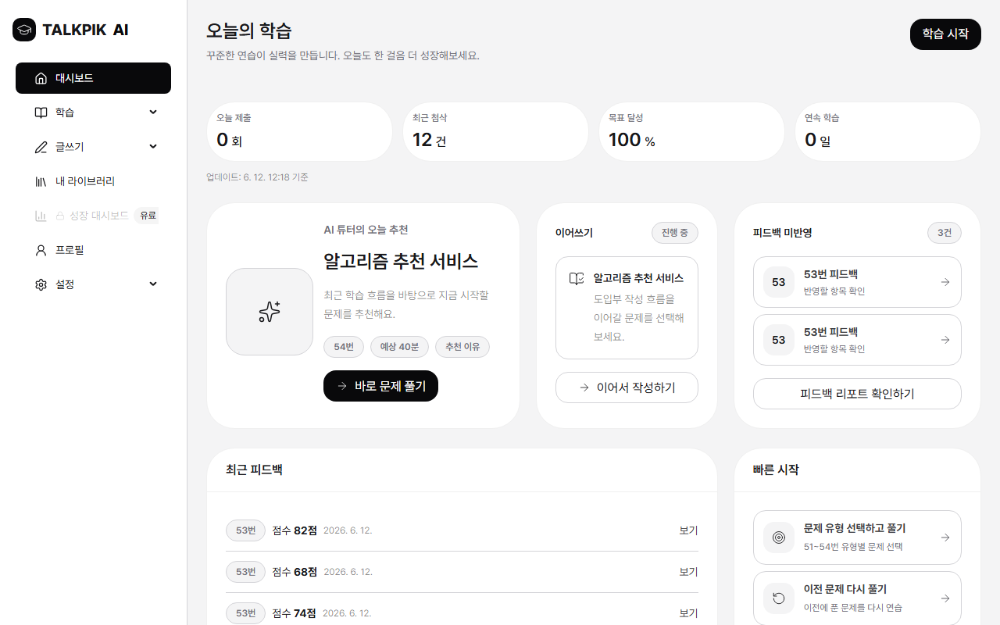
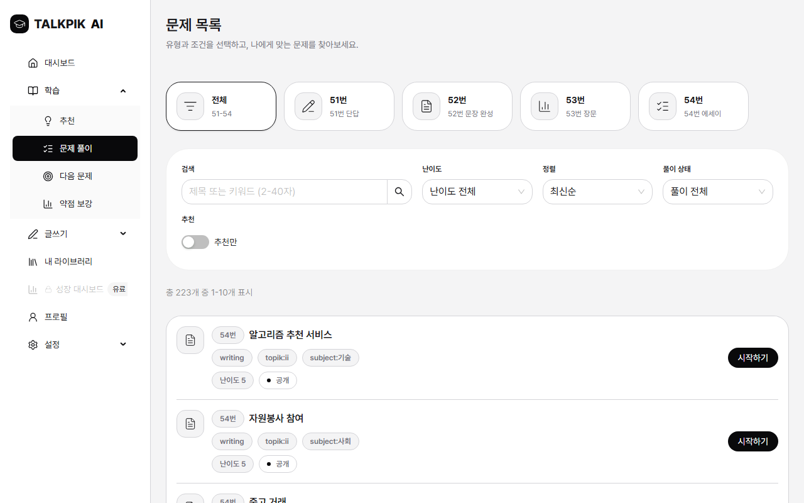
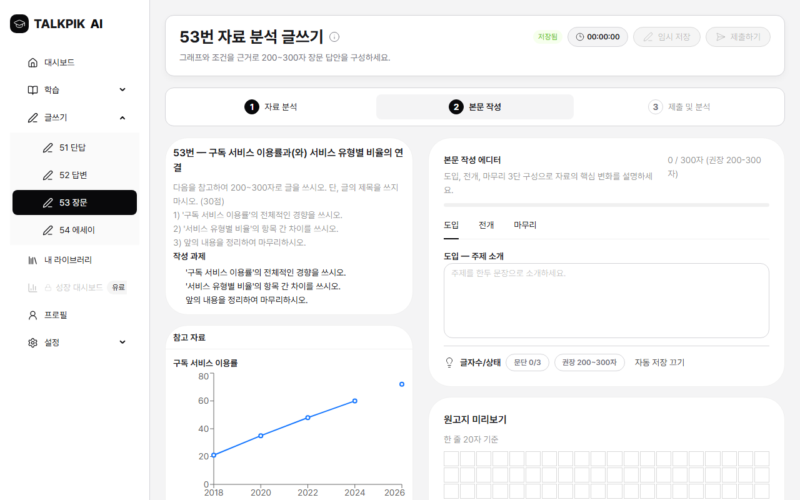
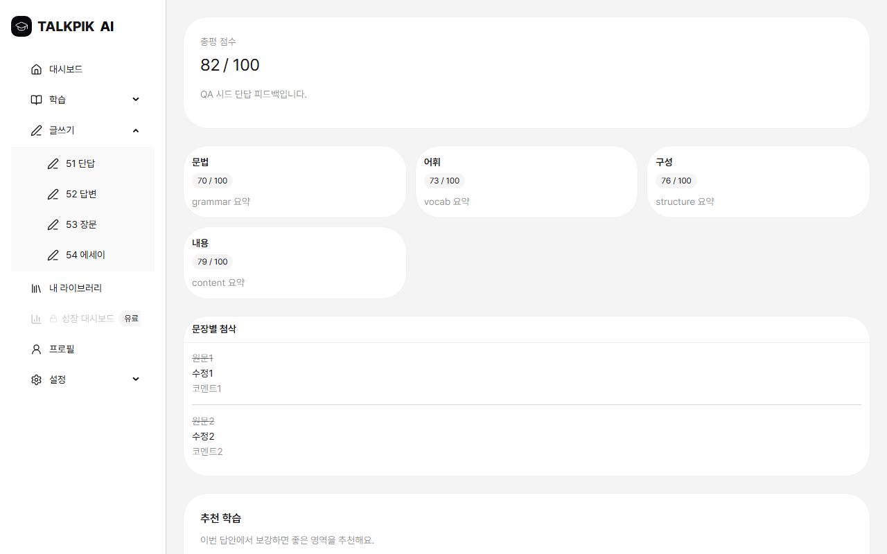
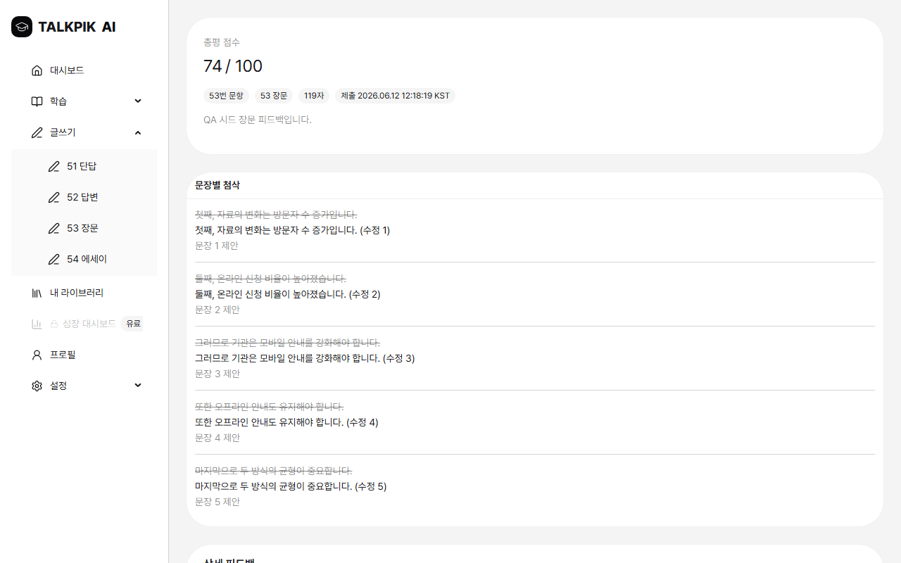
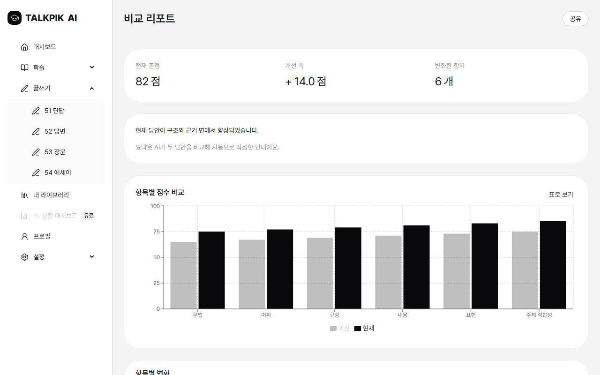
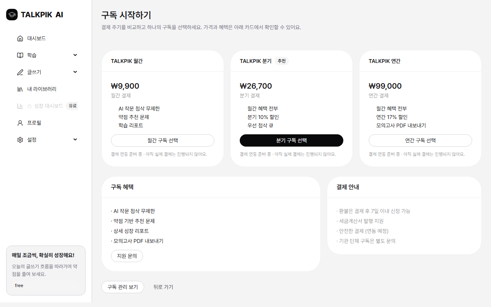
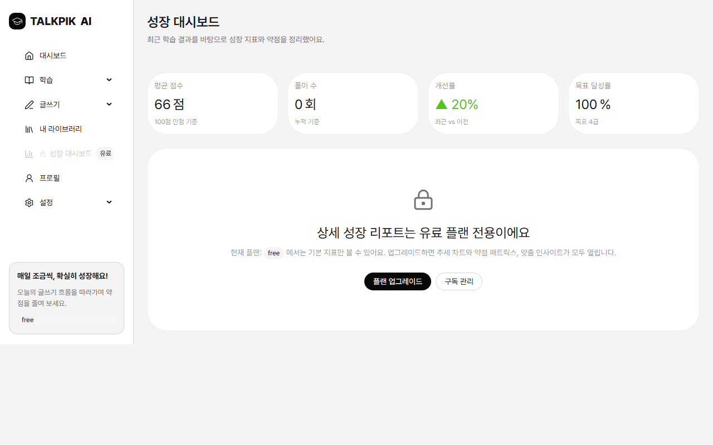
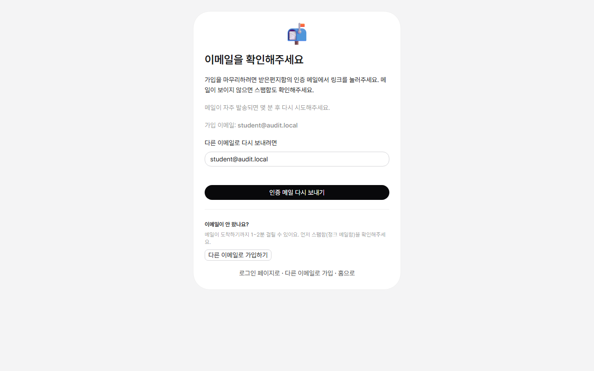
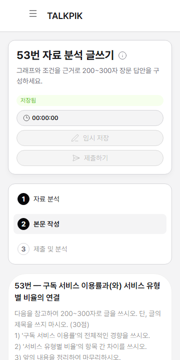
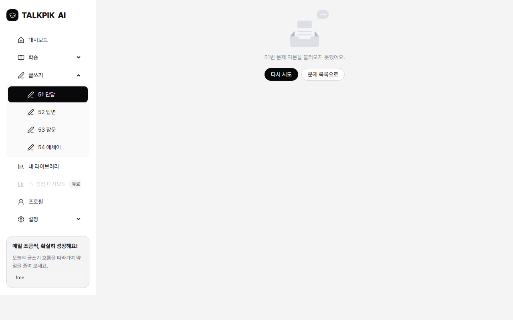
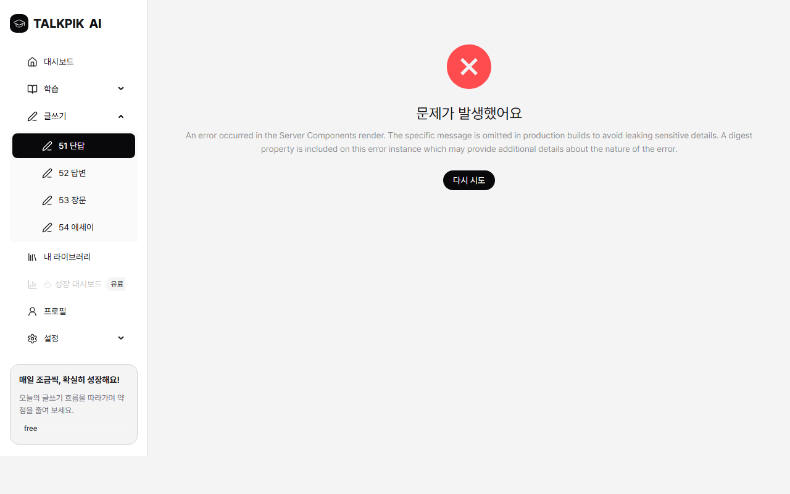
전체 캡처(공개 11·보호 22·모바일 5·관찰 7)는 qa-report-20260612-1205-evidence/ 폴더 참조. trace/auth-state는 인증 토큰 포함이라 복사·커밋하지 않고 로컬 test-results/에만 보존.
각 화면을 description.md의 영역(Number Map)·제약 조건·예외 기준으로 대조. 대부분의 화면은 (a) 하이드레이션 증명 캡처 + (b) 해당 화면 e2e 스펙("matches the wireframe constraints")의 동시 통과로 확정.
| IA | 화면 | 판정 | 대조 근거 |
|---|---|---|---|
| A-01 | 회원가입 | PASS | 렌더+하이드레이션; sign-up.spec(가입 payload·중복 인라인 오류) env 수정 후 GREEN |
| A-02 | 로그인 | PASS | auth-page-switch.spec(로그인↔가입 전환·매직링크 정렬) GREEN |
| A-03 | 학습 목표 설정 | PASS | 렌더+하이드레이션; 재진입 값 유지(PERS-S3 코드 확인) |
| B-01 | 홈 대시보드 | PASS | 영역 1-4 모두 존재(사이드내비/KPI 4+갱신시각/추천·진행 카드/최근 피드백). 성장=🔒유료 배지(잠금 사유). 캡처 확인 |
| C-01 | 문제 유형 추천 | PASS | 렌더+하이드레이션 |
| C-02 | 문제 목록 | PASS | 영역 1-5 모두: 필터(유형 탭/난이도/풀이상태/추천만)·검색(2-40자)·정렬·행(번호·유형·난이도·●공개·시작)·페이지(총 223 중 1-10). 캡처 확인 |
| C-03 | 다시 풀기 모달 | PASS | 모달(라우트 없음) — user-flow상 C-02에서 트리거. C-02 행→시작 동작 확인 |
| D-01 | 51번 단답 | PASS | 영역 1-5(저장/제출·지문·이미지·입력 10-120자·도움말). 제출 비활성(글자수 부족 "왜 안되는지" 표시) |
| D-02 | 52번 답안 | PASS | 렌더+하이드레이션 |
| D-03 | 53번 장문 | PASS | 지문·조건·참고차트(recharts)·도입/전개/마무리 에디터·글자수(0/300 권장)·원고지·작성단계 stepper. 캡처 확인 |
| D-04 | 54번 에세이 | PASS | 렌더+하이드레이션 |
| D-M1 | 제출 확인 모달 | PASS | submission-confirm-modal.spec GREEN(동의 전 제출 비활성→체크 후 활성→취소시 입력 보존). 모달은 <h2>로 제목 렌더(antd6) |
| D-M2 | AI 분석 로딩 | PASS | analysis-loading-modal.spec GREEN |
| D-M3 | 자동저장 경고 | 부분 | autosave-warning-modal.spec GREEN(컴포넌트). 단 앱 내 이동 트리거는 미배선=스펙 갭 G1 |
| E-01 | 단답 피드백 | PASS | 시드 데이터로 검증: 총평·4차원 카드·문장 첨삭·추천·4액션. short-feedback.spec GREEN |
| E-02 | 장문 피드백 | PASS | 시드 데이터로 검증. long-feedback.spec GREEN |
| R-01 | 비교 리포트 | PASS | 시드 데이터로 검증: KPI·비교 bar 차트(이전 vs 현재)·표로보기·narrative. comparison-report.spec GREEN |
| R-02 | 다음 문제 추천 | PASS | next-problem.spec GREEN; 폴백 추천 렌더 |
| F-01 | 내 서재 | PASS | library.spec GREEN(탭·검색·페이지·빈상태) |
| F-M1 | PDF 내보내기 모달 | PASS | 모달; window.print 호출(LIB-S1 코드 확인). core-writing-flow 후반 단계가 모달 오픈 확인(env 수정 후 도달 가능) |
| G-01 | 설정 언어 | PASS | language-settings.spec GREEN; SET-S2 직접 관찰: 영어 전환 즉시 반영, missing key 0, coverageNote 노출 |
| X-01 | 제품 랜딩 | PASS | screens-public.spec GREEN + 캡처 |
| X-02 | 성장 대시보드 | PASS | growth-dashboard.spec GREEN; 무료=잠금 UI(ACC-S4) |
| X-03 | 페이월 | PASS | paywall.spec GREEN; 3주기·추천배지 1개·정직한 스텁. 캡처 확인 |
| X-04 | 구독 관리 | PASS | subscription-management.spec GREEN |
| X-05 | 프로필 편집 | PASS | profile-editing.spec GREEN |
| X-06 | 비밀번호 재설정 | PASS | password-reset.spec env 수정 후 GREEN(요청 인터셉트→sent 상태) |
| X-07 | 약점 기반 추천 | PASS | weakness-recommendations.spec GREEN; 무료=잠금 |
| X-09 | 알림 설정 | PASS | notification-settings.spec GREEN |
| X-11 | 인증 에러 | PASS | auth-error.spec GREEN; reason 매핑 캡처 |
| X-12 | 인증 메일 확인 | PASS | verify-email.spec env 수정 후 GREEN; 재전송→resend 요청+cooldown 직접 확인 |
| X-13 | 이용약관 | PASS | terms.spec GREEN |
| X-14 | 개인정보처리방침 | PASS | privacy.spec GREEN |
| X-16 | 새 비밀번호 설정 | PASS | password-reset-confirm.spec GREEN(3뷰포트 하이드레이션) |
| X-17 | 인증 콜백 fragment | PASS | auth-callback-fragment.spec GREEN; fragment 없음→error?reason=unknown 확인 |
폴더 번호 21·30·32·37은 admin 화면 제거(2026-06-11)로 결번 — src/app/**/admin* 라우트 0개 확인(경계 준수).
| ID | 시나리오 | 출처 | 결과 | 수행 경로 / 관찰 |
|---|---|---|---|---|
| AUTH-S1 | 첫 방문 가입→인증메일 | [CODE] | PASS | sign-up.spec(가입 payload·verify-email redirect)+verify-email.spec GREEN(env 수정 후). 재전송 60초 cooldown 직접 확인 |
| AUTH-S2 | 재방문 로그인 post-auth 분기 | [CODE+SPEC] | PASS | 로그인 계정 post-auth→/dashboard(동의+목표 충족 분기 정상). 동의 미충족 분기는 미재현(이 계정 이미 동의) |
| AUTH-S3 | 비밀번호 분실→X-16 | [CODE] | PASS | password-reset.spec GREEN(요청→sent+cooldown); X-16 렌더 확인. 만료 링크 실제 메일 흐름은 미수행 |
| AUTH-S5 | Google OAuth | [CODE+SPEC] | PASS | google-oauth.spec GREEN |
| AUTH-S6 | 로그아웃 | [CODE+갭] | 스펙 갭 G6 | 대시보드/프로필/설정/헤더 드로어 어디에도 로그아웃 UI 없음. GET /auth/sign-out → 405 확인. 라우트만 존재 |
| ACC-S1 | 비로그인 × 보호 22 | [CODE] | PASS | 22개 전부 /login redirect |
| ACC-S3 | 로그인 × /login·/sign-up | [갭] | 스펙 갭 G5 | 인증 상태로 두 페이지 모두 폼 렌더(가드 없음) 확인 |
| ACC-S4 | 무료 × /growth·/weakness | [CODE] | PASS | 리다이렉트 아닌 잠금 UI+업그레이드 CTA 3개 렌더. 기본 지표만 노출 |
| ACC-S5 | 타인/없는 feedback id | [CODE] | PASS | 존재하지 않는 uuid → AppNotFound("페이지를 찾을 수 없습니다"+대시보드 이동), 500/누출 없음 |
| PRAC-S1 | 추천 따라 문제 도달 | [CODE] | PASS | C-02 필터·검색·정렬·풀이상태·페이지네이션·상태 배지 모두 동작 |
| WRIT-S2 | 작성 중 이탈(앱 내) | [CODE+갭] | 스펙 갭 G1 | 작성 중 사이드바 이동 → 경고 모달 없이 /dashboard로 이동(D-M3 미트리거) |
| WRIT-S3 | 제출 취소 입력 보존 | [CODE] | PASS | D-M1 오픈→취소→입력(40자) 그대로 보존 |
| SET-S2 | 언어 변경 | [CODE] | PASS | 영어 전환 즉시 UI 반영, missing key 0, coverageNote 노출, 콘솔 에러 0(한국어 복원) |
| PAY-S1 | 잠긴 기능→페이월 | [CODE] | PASS | 페이월 정직한 스텁("결제 연동 준비 중·실제 결제 안 됨") — 구독 행 생성 없음 |
| STATE-S3 | 잘못된 문제 id | [CODE] | 부분(P2) | valid uuid(없음)=정상 빈상태+재시도+문제목록 / malformed(비-uuid)=서버 에러 바운더리(D-3) |
| STATE-S4 | 없는 라우트 | [CODE] | 부분(P3) | 최상위 미매치=Next 기본 404(전용 AppNotFound 아님). (workspace) 내부는 커스텀 404 정상 |
| NAV-S1 | 오래된 콜백 재방문 | [CODE] | PASS | auth-callback-history.spec GREEN |
| 그 외 ONB/PRAC-S2~4/WRIT-S1·S4·S5/FB-S1~3/LIB-S1/SET-S1·S3/PERS/VAL/NAV-S2~5/STD 시나리오는 해당 화면 e2e 스펙(30개, 3뷰포트) 통과 + 코드 조사로 커버. 실제 메일 링크/멀티탭/오프라인/IME 등 외부·OS 의존 케이스는 §11 UNVERIFIED, §13 위험으로 분리. | ||||
| ID | 내용 | 관찰 결과 | 에스컬레이션 제안 |
|---|---|---|---|
| G1 | 앱 내 이동 시 자동저장 경고 미배선(user-flow는 D-M3 정의) | 확인됨. 작성 중 사이드바 이동 시 경고 없이 즉시 이동. 직전 미저장 버퍼(2초 디바운스 전)는 안내 없이 사라질 수 있음(DB draft는 저장분만 복원) | user-flow와 코드 정합: 경고를 배선하거나 문서에서 제거 |
| G2 | 제출한 문제 재진입 "이미 제출함" 안내 없음 | 코드 확인(편집 모드 재진입). 본 QA에선 직접 재현 미수행 | "이미 제출/피드백 보기" 분기 추가 여부 결정 |
| G3 | 서버 측 이중 제출 방지 없음(UI 버튼 비활성뿐) | 코드 확인. D-M1 제출 버튼은 isPending 중 비활성(UI 가드 동작) | 서버 멱등성 필요 여부 결정 |
| G4 | 분석 폴링 60초 소진 후 타임아웃 안내 없음 | 코드 확인(5초×12 폴링). 실패/지연 패널은 있으나 소진 후 타임아웃 카피 없음 | 소진 후 안내 카피 추가 |
| G5 | 로그인 상태 /login·/sign-up 가드 없음 | 확인됨. 인증 상태로 두 페이지 모두 폼 렌더 | 의도면 문서화, 아니면 대시보드 redirect 가드 |
| G6 | 로그아웃 UI 진입점 미발견(라우트만 존재) | 확인됨. 대시보드/프로필/설정/드로어에 로그아웃 없음. GET /auth/sign-out=405 | 우선순위 높음 — 로그인 사용자가 UI로 로그아웃 불가. 진입점 추가 강력 권장 |
| G7 | 학습 목표 건너뛰기: 문서(허용) vs 코드(강제 회귀) 충돌 | 코드 확인(대시보드가 목표 없으면 A-03 강제). 본 계정은 목표 있어 미재현 | 문서/코드 정합 |
| G8 | dashboard 외 보호 페이지 온보딩 게이트 부재 | 코드 확인. ACC-S2 분기 미직접재현(계정 온보딩 완료) | 온보딩 우회 허용 여부 결정 |
| G9 | 신규 사용자 대시보드 시작 안내 부재 | 대시보드 KPI는 0 표기. description.md는 "0값 대신 시작 유도 문구" 요구 — 신규(제출0) 계정 미보유로 부분 관찰 | 신규 빈 상태 시작 안내 추가 여부 |
| G10 | 멀티탭/오프라인/모달 뒤로가기 동작 미정의 | 표준 사용성 영역, 미정의(STD 시나리오) | 표준 동작 정의 여부 |
| FUNC ID | 시작 전 | 시작/잠금 | 실행 중 | 성공 | 실패 | 근거 |
|---|---|---|---|---|---|---|
| FUNC-D01-자동저장 | ✓ 저장됨 배지 | — | ✓ 디바운스 후 저장 | ✓ "저장됨" | ✓ 실패 배지+경고(AutosaveBadge.test/FAIL-S1) | 직접 관찰+단위 |
| FUNC-D01-제출버튼 게이팅 | ✓ 글자수 0이면 비활성+"왜 안되는지" | — | — | ✓ 유효 길이→활성 | — | 직접 관찰 |
| FUNC-DM1-제출 | ✓ 동의 전 제출 비활성 | ✓ 체크 후 활성, 취소 시 입력 보존 | ✓ isPending 비활성 | ✓ 피드백 이동 | ✓ 모달 유지+입력 보존(WRIT-S3) | 전용 spec+관찰 |
| FUNC-X12-재전송 | ✓ 이메일 input 요구 | ✓ 클릭→로딩 | ✓ 요청 발생(env 수정 후) | ✓ 60초 cooldown+input 비활성 | env 누락 시 영구 로딩(D-2) | 네트워크 로그 |
| FUNC-G01-언어저장 | ✓ | ✓ 저장 클릭 | ✓ | ✓ 즉시 UI 전환(refresh) | — | SET-S2 관찰 |
| FUNC-C02-필터/검색/페이지 | ✓ 컨트롤 렌더 | — | — | ✓ 223문제·10/페이지·배지 | —(0건 Empty는 코드 확인) | C-02 관찰 |
| FUNC-X03-결제CTA | ✓ | ✓ | — | ✓ 스텁 안내, 데이터 변경 없음 | — | PAY-S1 관찰 |
| 원칙 | 판정 | 근거 |
|---|---|---|
| 1. 피드백 없는 상태 금지 | 1건 위반 | 대부분 준수(배지·로딩·토스트). 단 인증 redirect throw 경로(env 누락 시)는 영구 로딩+무피드백(D-2) |
| 2. 중복 실행 잠금 | 준수 | 제출/저장/언어/결제 CTA 모두 실행 중 비활성. (서버 멱등성은 G3 별도) |
| 3. 실패해도 입력 보존 | 준수 | 제출 취소 시 입력 보존(WRIT-S3), DB draft 복원 |
| 4. 갇힘 금지 | 조건부 | not-found/에러바운더리에 재시도·이동 CTA 존재. 단 인증 throw 영구 로딩(D-2)은 갇힘 사례, G4 폴링 소진도 후보 |
| 5. 패턴 일관성 | 준수 | 저장/제출/내보내기 모달·배지 패턴 일관(antd 기반) |
| # | 휴리스틱 | 화면 | 발견 | 등급 | 개선 제안 |
|---|---|---|---|---|---|
| U-1 | #3 사용자 통제와 자유 | 전역(사이드바/헤더) | 로그아웃 UI 진입점이 없음(G6). 로그인 사용자가 정상적으로 빠져나갈 방법이 화면에 없음 | P2(UX) | 사이드바 하단 또는 프로필 메뉴에 로그아웃 추가 |
| U-2 | #1 시스템 상태 가시성 | 인증 폼(가입/재설정/재전송) | redirect URL 생성 실패(env 누락) 시 버튼이 영구 로딩+에러 안내 없음(unhandled rejection) | P2 | handleResend류를 try/catch로 감싸 실패 토스트+로딩 해제(D-2) |
| U-3 | #5 일관성 / #9 오류 복구 | 글쓰기(작성 중 이동) | 앱 내 이동 시 미저장 경고 없음(G1). user-flow의 D-M3 흐름과 불일치 | 갭 | G1 문서 게이트 |
| U-4 | #9 오류 메시지 품질 | 글쓰기(잘못된 problem id) | malformed id 시 "문제가 발생했어요"(일반 서버 오류). valid uuid는 친절한 빈상태로 잘 처리됨 | P2 | id 형식 검증 후 빈상태로 통일(D-3) |
| 영역 | 판정 | 근거 |
|---|---|---|
| 기획 | PASS | 35화면 라우트/플로우가 sitemap·user-flow·description.md와 충돌 없음. 결번 21/30/32/37 admin 부재 확인 |
| 디자인 | PASS | 하이드레이션 증명 캡처에서 overflow/겹침 없음, loading/empty/locked/disabled 상태 존재(데스크톱+모바일) |
| UX/사용성 | 조건부 | 핵심 과업 완료 막힘 없음. 단 로그아웃 진입점(U-1)·인증 실패 피드백(U-2)은 개선 백로그 |
| 개발 | 조건부 | lint/typecheck/build/test PASS. format FAIL(P3). e2e는 env 수정 후 GREEN(잔여 1=테스트 셀렉터). secret 미노출, route guard 정상 |
| QA | PASS | P0/P1 0건. 재현 절차·증거 기록. 환경 게이트 1건 명시 |
| 콘텐츠/학습 | PASS | 51-54 문항 맥락·CTA·피드백 문구 학습자 친화. 단 일부 시드 콘텐츠("알고리즘 추천 서비스" 등) 정합은 콘텐츠팀 확인 권장 |
NEXT_PUBLIC_SITE_URL 미설정 시 인증 흐름 마비| 항목 | 내용 |
|---|---|
| 영향 범위 | 회원가입(A-01), 비밀번호 재설정(X-06), 인증 메일 재전송(X-12) — Supabase redirect URL을 만드는 모든 인증 흐름 |
| 재현 | .env.local에 NEXT_PUBLIC_SITE_URL이 없는 상태로 pnpm build && pnpm start → 가입/재설정/재전송 버튼 클릭 → 버튼 영구 "로딩", 요청 미발생 |
| 기대 | 요청 발생 + 성공/에러 안내 |
| 실제(수정 전) | buildAuthRedirectUrl()의 resolveSiteUrl()이 prod에서 throw → void handleResend() unhandled rejection → 영구 로딩(콘솔: "NEXT_PUBLIC_SITE_URL is required in non-development environments") |
| 근본 원인 | .env.example에 필수로 문서화된 NEXT_PUBLIC_SITE_URL=http://127.0.0.1:3000이 .env.local에 누락. dev는 폴백 있어 통과 → prod 전용 |
| 증거 | 네트워크 로그: 수정 전 resend 요청 0건/pageerror 1건 → 수정 후 POST /auth/v1/resend?redirect_to=http://127.0.0.1:3000/auth/callback?next=/onboarding/learning-goal 1건, 콘솔 에러 0, cooldown 시작. e2e 12건 RED→GREEN |
| 조치 | QA 중 .env.local에 문서값대로 NEXT_PUBLIC_SITE_URL=http://127.0.0.1:3000 추가 → 재빌드 → 재검증 완료. prod 배포 환경 변수에 실제 사이트 주소로 반드시 설정 필요. |
| owner / status | 배포/인프라 · 배포 전 필수(RESOLVED in QA env, must-set in prod) |
D-1의 근본 원인이 환경이라도, 실패 모드 자체가 결함입니다. handleResend(및 유사 가입/재설정 핸들러)가 buildAuthRedirectUrl throw를 잡지 않아 setResending(false)에 도달하지 못하고 사용자에게 아무 안내 없이 버튼이 멈춥니다(상태 5원칙 #1·#4 위반). 개선: 핸들러를 try/catch로 감싸 실패 토스트 + 로딩 해제. 증거: 콘솔 pageerror + 버튼 loading 잔존. owner=프론트엔드 · status=open(P2).
?problem= id가 서버 에러 바운더리 유발STATE-S3: valid-format uuid(존재하지 않음)는 "지문을 불러오지 못했어요 · 다시 시도 · 문제 목록으로"로 정상 처리. 그러나 malformed(비-uuid) id는 Postgres uuid 캐스팅 throw → "문제가 발생했어요"(일반 서버 오류, 다시 시도는 있으나 문제목록 링크 없음). 개선: problem id를 uuid 형식 검증 후 빈상태로 통일. 갇힘은 아님(재시도·사이드바 존재)이라 P2. 증거: state-s3-malformed.png / state-s3-valid-uuid.png. owner=프론트엔드 · status=open(P2).
pnpm format 실패(193 파일, 포맷 드리프트)prettier --check가 193개 파일에서 실패(커밋된 베이스라인 상태). 줄바꿈 문제 아님(LF 확인), 실제 포맷 차이. 사용자 기능 무관, dev 툴링. pnpm format:write로 일괄 수정 가능(QA 범위상 코드 미변경). owner=개발 · status=open(P3).
STATE-S4: /존재안함 → "404 This page could not be found"(Next 기본). 루트 not-found.tsx 부재. (workspace) 내부는 커스텀 AppNotFound 정상 동작. 404 상태코드는 정상이라 cosmetic. 개선: 루트 app/not-found.tsx 추가. owner=프론트엔드 · status=open(P3).
.ant-modal-titlecore-writing-flow.spec.ts:81이 antd 6에서 사라진 .ant-modal-title 클래스로 D-M1 제목을 찾아 실패. 실제 모달은 정상(제목 h2·체크박스·제출 버튼 렌더, 전용 spec PASS). 제품 결함 아님. 권장: 셀렉터를 getByTestId("submission-confirm-modal")로 교체.
| 항목 | 사유 | 재검증 방법 |
|---|---|---|
| 교차-유저 RLS 격리(user-A↔user-B) | 테스트 계정 1개(student@audit.local)만 존재 | 2번째 계정 추가 후 타인 소유 row 접근 시도, 또는 Docker 스택에서 rls-smoke.test 실행 |
| 실제 메일 링크 흐름(만료/cleanup 후 user_not_found) | 실제 메일 수신/링크 만료가 외부(Supabase) 의존 | 스테이징 메일박스에서 만료 링크 클릭 → X-11 reason 매핑 확인(user-flow 6시나리오) |
| AUTH-S2 동의 미충족 분기 / G7·G8 온보딩 게이트 | 테스트 계정이 이미 동의+학습목표 완료 | 동의·목표 미완료 신규 계정으로 post-auth→consent/A-03 분기 확인 |
| G9 신규(제출 0) 대시보드 시작 안내 | 테스트 계정에 제출 이력 존재 | 제출 0 신규 계정으로 대시보드/서재 빈상태 카피 확인 |
| STD-S1/S3/S4/S7(멀티탭·IME·오프라인·200% 줌) | OS/브라우저·입력기 의존, 강제 재현 난이도 | 실기기 수동 탐색 세션 |
| D-M2 분석 실시간 폴링·G4 60초 소진 | 실제 AI 분석 파이프라인이 스텁/비동기 | 분석 pending 상태를 시드해 폴링·타임아웃 경로 관찰 |
docs/qa/qa-execution-plan.md (rev6) — 본 QA 실행 기준docs/flow/user-flow.md — post-auth 분기, 인증 콜백/에러 6시나리오, D-M3 이탈, 유료 잠금docs/Wireframe/README.md + 화면별 description.md(B-01·C-02·D-01·D-M1·F-01·X-03·X-12 등) — 영역/제약/예외 대조 기준src/lib/routes.ts — 공개 12·보호 22 라우트, /growth 유료 잠금src/lib/auth/redirect-url.ts, src/lib/supabase/env.ts, src/components/auth/VerifyEmailCard.tsx — D-1 근본 원인 코드 확인.env.example — NEXT_PUBLIC_SITE_URL 필수 문서화 확인tests/e2e/*(setup·screens·flows), playwright.config.ts — 시드 방식·뷰포트·셀렉터CLAUDE.md / docs/admin-scope-boundary.md — admin 경계(P0) 기준NEXT_PUBLIC_SITE_URL을 실제 사이트 주소로 설정(미설정 시 인증 흐름 마비 — D-1). 빌드 타임 인라인 변수이므로 배포 빌드 전에 주입 필요.pnpm dev 서버를 정지하고 prod 서버를 띄웠습니다. 개발 재개 시 IDE에서 pnpm dev를 다시 실행하세요(현재 포트 3000은 QA prod 서버 점유 중)..env.local에 NEXT_PUBLIC_SITE_URL 1줄 추가됨(문서화된 필수 값). 커밋 대상은 아니며 의도된 설정 보완입니다.test:supabase:local skip(환경 제약, 결함 아님). 교차-유저 RLS는 Deferred(계정 1개).tests/e2e/auth-state/·test-results/는 인증 토큰 포함 → 복사·커밋하지 않고 로컬 경로만 보존. 스크린샷에는 민감정보 없음(테스트 계정 이메일은 audit용).생성: Claude Code QA 실행 · 2026-06-12. 증거 폴더: docs/qa/reports/qa-report-20260612-1205-evidence/. 본 리포트는 코드/스키마/라우트를 변경하지 않으며, .env.local의 문서화된 필수 변수 보완 1건만 적용했습니다.